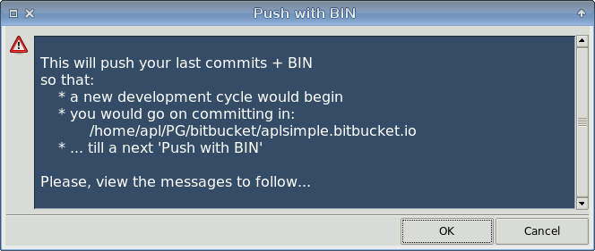

All of VCS including Mercurial SCM have a common problem with binary files of repository, namely:
If the files were being changed, their versions (even mistaken or stale) are all present in VCS history - nearly 'as is', with minimal packing if any.
In the course of time, this accumulation of binaries would involve the terrific size of remote repository and its local clones. No wonder that you might hear about 60 Gb repositories - what if not the updateable binaries could fatten them?
At that, the value of the binary history is often minimal if not equal to zero.
So, at an opportunity the updateable binaries are excluded from the VCS history at all, by means of .gitignore, .hgignore etc.
But what can you do e.g. with bitbucket sites (and analogues) that are built as usual Mercurial SCM repositories? Imagine you have a download page with links to binary files (.zip, .rar, .exe, .pdf etc.) and those files are disposed to update, often at that. To be downloaded or anyhow available, the binaries must be present in the site repository, i.e. in hg history.
It's a pity that Mercurial SCM doesn't provide the 'no history for a specific file' facility. Hopefully, this would be fixed in future, but for now we need some workarounds.
A method proposed below allows to minimize the binary overheads for a bitbucket site managed by Mercurial SCM.
We'll consider the following case only:
Pitifully, the bitbucket announced Sunsetting Mercurial support in Bitbucket which means "Mercurial features and repositories will be officially removed from Bitbucket and its API on June 1, 2020".
Nevertheless I hope the below considerations still apply to any of other Mercurial hostings.
The code below is for use in Linux, though being a bit remade it would fit to other platforms.
First of all, let's subdivide the binary files into:
1st and 2nd types are well suited to be included into hg history. We commit them once (twice or thrice as for 2nd type) and don't care about them anymore.
But the binaries of 3rd and 4th types should be somehow excluded from hg history.
At that, these binaries should be available in a site, both remote and local. On a local machine, these binaries must be at one of hg heads, as a localized version of TortoiseHg shows:
Figure 1
A development is going on at the tip head where all commits are done, while the binary files are sort of outsiders: they are not on the tip head and stated as '?' (not managed) in 'hg status'. On the above picture, the binaries are in BIN revision.
The bitbucket.org would not allow to push the multiple heads to a remote repository. To be exact, it would resist to the pushing of multiple heads as it's prone to confuse.
Thus, we should delete this outside BIN revision before pushing the tip head. We should strip BIN commit on bitbucket repository as well!
Then we should restore the 'bin' files as BIN revision on the tip. And to 'hg push' to a remote repository.
So, the remote repository would contain our 'essential changes' and binaries. All of these would be seen in our bitbucket site.
At last, on a local machine we 'hg update' to a revision just prior to BIN. On the picture below, this situation is marked with It's not the tip revision! :
Figure 2
No sooner than we commit new essential changes, the local repository would return to a state similar to the previous:
Figure 3
Comparing Figure 1 and Figure 3, we see that the cycle repeats and there are no binary revisions between #4 and #8 except for the outside BIN.
The cost of this method is that you should push all of 'bin' directory to bitbucket each time at pushing, even when there are no changes in 'bin' and the only change is a character in some page.html. What can you do with this? Push to your remote repository as rarely as possible. Push when the essential changes have been accumulated in your local repository.
The preparatory steps:
[ui] username = MyName <myname@mymail.mydomain> [extensions] extdiff = fetch = strip =which enable diff, fetch, strip hg extensions. At that, the most important is the strip.
syntax: regexp ^.+\.bak/.+ ^\.hgignorewhich exclude .hgignore file and *.bak directories (e.g. bin.bak) from the hg history.
With this initialization done, let's start the working cycle described above.
First of all you must strip BIN commit on bitbucket repository before 'hg push'! You cannot otherwise strip the remote commits.
After that, run the e_menu items:
Main menu -> Hg -> Next -> Push with BIN
The 'Push with BIN' item brings up the warning message:

Figure 4
After selecting 'OK' you'll get two windows (a bit moved and resized for this figure):
Figure 5
The right window is a console showing a current state of repository. View it carefully and pay attention mostly to:
It it's OK, close the window and enter the name of 'binary files' revision in the left dialog.
The name of 'BIN' revision should correspond to the directory of binary files:
If you select 'BIN' for the revision name, you should have 'bin' directory of binaries.
If 'BIN2' revision, then 'bin2' directory.
'BINARY' revision -> 'binary' directory.
'DOWNLOAD' -> 'download'.
etc.
After entering the name of 'binary files' revision ('BIN' by default) and selecting 'OK' you would push the last commits + 'BIN' revision (as the tip commit) to bitbucket. Your only action would be entering your bitbucket password.
After entering the password and pushing, view the results and notice the position of last essential commit in hg history.
Most likely it is 3rd from the tip (just under 'BIN' revision). You should confirm it in the following dialog:
Figure 6
... and you would get the final messages:
Figure 7
Well done. Run Main menu -> Hg -> tortoisehg - thg menu item to check if the state is like on Figure 2.
Probably, the only trouble you would come into while using this method is the forgotten stripping of BIN commit at bitbucket.
A little trouble indeed.
To get over it, you should go to your bitbucket repository and strip all BIN commits whatever they are.
After that you should repeat 'Push with BIN' described in the previous section.
Let's look at this a bit closer. Suppose, we have bitbucket repository where there is (unstripped) BIN commit:
Figure 8
Suppose, we've made a blunder with pushing another BIN commit to bitbucket repository.
We would see the following sad picture at bitbucket:
Figure 9
At bitbucket we should perform 'Strip commit' all the same.
We go through bitbucket's Repository -> Settings -> Strip commits and enter BIN in 'Commit to strip' field:
Figure 10
Then we do 'Preview strip' and 'Confirm strip'.
We perform the stripping twice because there are two BIN commits at bitbucket repository (in our test case).
We have the following picture at the second stripping:
Figure 11
After the second stripping we have a correct commit history at bitbucket repository:
Figure 12
...and after 'Push with BIN' we have the desired:
Figure 13
The following recommendations might be useful:
You may change the Main menu -> Hg -> Next -> Push with BIN menu item.
After all, you'll see that there is nothing special about this.
Just press Ctrl+E keys or right-click on the menu to edit its code:
R: Push with BIN R: cd %PD
R: Push with BIN R: %q "Push with BIN" " This will push your last commits + BIN \
\n so that: \
\n * a new development cycle would begin \
\n * you would go on committing in:\n %PD \
\n * ... till a next 'Push with BIN' \
\n\n Please, view the messages to follow..."
S: Push with BIN S: \
echo "\n------------------------\n" \n \
echo "HG SUMMARY:\n" \n \
hg summary \n \
echo "\n------------------------\n" \n \
echo "HG STATUS:\n" \n \
hg status \n \
echo "\n------------------------\n" \n \
echo "HG HEADS:\n" \n \
hg heads \n\n
R: Push with BIN R: %I warn "Push with BIN" {entRev {{Tag of 'BIN' revision:} \
{} {-w 20}} {"$::RBIN"} lab} -ontop 1 -geometry $::RGEO -head \
"\nThis will push your last commits + BIN of \n %PD \
\n\nSpecifically this means: \
\n * old 'BIN' commit (if any) is stripped by 'hg strip' \
\n * new 'bin' files are pushed as a new 'BIN' commit \
\n * working directory is updated to a revision prior to 'BIN' \
\n\nSo you would go on committing in your essential hg head \
\nusing this 'Push with BIN' instead of regular 'hg push'. \
\n\nVIEW MESSAGES and MAKE SURE that: \
\n 1. All of 'bin' directory are stated as '?' by hg status. \
\n 2. No other changes (M,A,R...) are stated by hg status. \
\n 3. Your essential development head is the tip. \
\n 4. 'BIN' is stripped by Bitbucket/Settings/Strip commits. \n" \
-weight bold == ::RGEO - ::RBIN
R: Push with BIN R: %C set ::rbin [string tolower "$::RBIN"]
SW: Push with BIN SW: \
echo '###################### backup $::rbin to .$::rbin.bak' ; \
rm -f -r $::rbin.bak/* ; \
mkdir $::rbin.bak ; \
cp -a $::rbin/* $::rbin.bak ; \
echo '###################### remove $::RBIN commit' ; \
hg update $::RBIN ; \
hg strip --no-backup $::RBIN ; \
hg update tip ; \
echo '###################### restore $::rbin from $::rbin.bak' ; \
rm -f -r $::rbin/* ; \
mkdir $::rbin ; \
date '+Updated: %%n %%F at %%X' 1> $::rbin.bak/README ; \
cp -a $::rbin.bak/* $::rbin ; \
echo '###################### CHECKING hg status' ; \
hg status ; \
read -n 1 -p \
'MAKE SURE that ? $::rbin files would be committed only. Press a key to continue...' ; \
echo '###################### add $::rbin/* and commit' ; \
hg add $::rbin/* ; \
hg commit -m $::RBIN ; \
hg tag $::RBIN ; \
echo '###################### push to Bitbucket' ; \
hg push -f ; \
echo '###################### REMEMBER the revision prior to $::RBIN' ; \
hg log -l 7 ; \
echo '###################### REMEMBER the revision prior to $::RBIN'
R: Push with BIN R: %I ques "WORKING REVISION" {entRev {{Revision prior to $::RBIN:} {} \
{-w 20}} {"$::REV1"} lab} -head "\n Enter a revision prior to $::RBIN. \
\n It is a main stream of development. \
\n Most likely, it is -3 (2 level under the tip). \n" -weight bold == ::REV1
SW: Push with BIN SW: \
echo '\n\n###################### go to a revision prior to $::RBIN' ; \
hg update -r $::REV1 ; \
echo '\n\n###################### restore $::rbin from $::rbin.bak (possibly not-committed)' ; \
rm -f -r $::rbin/* ; \
mkdir $::rbin ; \
cp -a $::rbin.bak/* $::rbin ; \
hg status ; \
hg summary ; \
echo '###################### THE END'